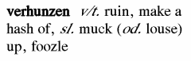

Many programmers often think about giving the source code to somebody else, so he can compile a binary for another system. However, very often you do not trust such persons, and giving the source to one such person can be the same as uploading it to a public site.
If you are among these people, Vahunz is for you.
Often programmers do not want to put their source code under some
license like the GNU GPL, as they know what is going to happen: vast
amounts of incompetent Unix-fossils will rape their source, extending
it in the brain-dead way they are used to write programs. They will
make it compatible to late 70-ties standards, so it will compile with
virtually every shabby compiler ever created since the stone-age.

They will make it conformant to the ridiculous GNU coding standards
and the messy and unreasonable disk structure widely used for
Unix-systems (with /bin/, /usr/man/ etc.) .
They will clutter the source with loads of #ifdefs,
making it completely unlegible for the original programmer. And many
other nasty things certain people do not like.
If you are among these people, Vahunz is for you.
Sometimes programmers think it would be okay if their program is ported to as many systems as possible, except one of those #!*? MS-DOS based systems created by people who only want to rule the world.
If you are among these people, Vahunz is for you.
Very often, a source code ends up in a state where it would be nice to reorganize the whole naming. That means, names of function, variables, constants etc. should "fit together". However, for applications consisting of several files, this is a difficult, boring and error prone task.
If one of your programs is in such a state and would deserve "The Great Renaming", Vahunz is for you.
For many programmers, there is no need to give the source code for one of their programs to anybody else. These will probably have no use for Vahunz.
Many programmers do not mind if their source code reads like puke because of inferior naming conventions. These will probably have no use for Vahunz.
Some programmers think that distributing the source code is a great idea, as other people can contribute to it. (In most cases, they haven't ever finished such a program, or it is a dirty hack with 2000 lines of code.) These will probably have no use for Vahunz.
The basic idea of Vahunz is to take your original source, which usually is reasonably commented, well indented and has meaningful names for variables and functions, and convert it to one which has not.
Removing comments and indention is a quite easy task, and works fully automatic.
Translating meaningful names in a sequence of seemingly random
characters, especially when these names are shared within several
source files, takes a bit more effort. Furthermore it does not make
sense to turn all names into garbage, as for example
printf() in a C-source is a standard function not written
by the programmer, but provided in an external library.
The best way to do this would be to write a converter that does pretty much the same as the original compiler, and knows all the time if a name is a variable, function, constant or something else. Unfortunately, this would be an awful lot of work.
Therefore, Vahunz takes a different approach. Basically, there are two passes:
The first pass scans all source files for names, and collects them.
The user can choose what to do with every name. For example, he can
tell Vahunz to leave the standard function name printf
untouched, but translate all occurrences of the self-written
read_my_file into garbage.
In this context, garbage means an algorithmically created,
unlegible name like for example g7B. All instances of
read_my_file will be replaced by g7B
within all source files being part of the program.
The second pass reads all the source files again, but also simultaneously writes them to a different directory under the same filename. In the copy, all comments and indention will be gone, and all names will be garbled as requested by the user. This process is called vahunzation.